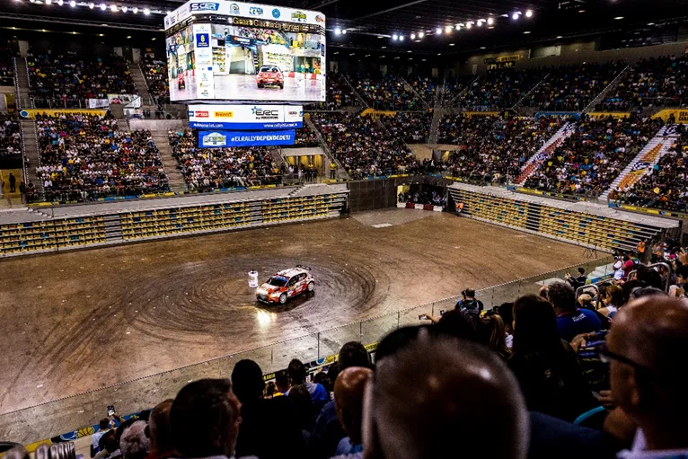
10 of the Worst Super Special Stages to ever be used in the WRC
The Powerslide Blog teams up with
Antti from It Gets Faster Now! to list the best and worst super specials of
WRC.
For each category, each of us have picked four shared favourites and three
personal favourites to create top 10 lists. In this post we present the worst
ones, and the best ones are on It Gets Faster Now. We also omitted super
specials before the year 2000 because not all are digitally archived yet.
But before we start, what makes a
super special bad?

Antti: When the route is too artificial, narrow and slow. A stage made up with barriers on a parking lot or too many donuts is just stupid. A super special also needs audience, so it should be where the people are and set up in a way that people can see it.
Dimitris: When the stage is too empty, too slow or filled with gimmicky stuff like donuts, pointless jumps and chicanes.
Rallye Deutschland 2017 - Saarbrucken
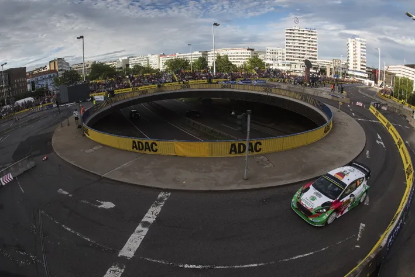
Dimitris: Where do I even start with
this stage? The whole stage just feels pointless! It’s 3 laps of a very narrow
route full of chicanes and hairpins.The stage was an eye-sore to watch, and it
caught out Kris Meeke, who broke his suspension on this stage.
Antti: The narrowness of the stage was for sure emphasized. Everything was
lined with concrete barriers, nothing was natural. It tells something that Jan
Kopecky won the stage with an R5 car. Luckily this stage was used only this one
time.
Highlights of the stage:
Rallye Deutschland 2018 - St Wendeler Land
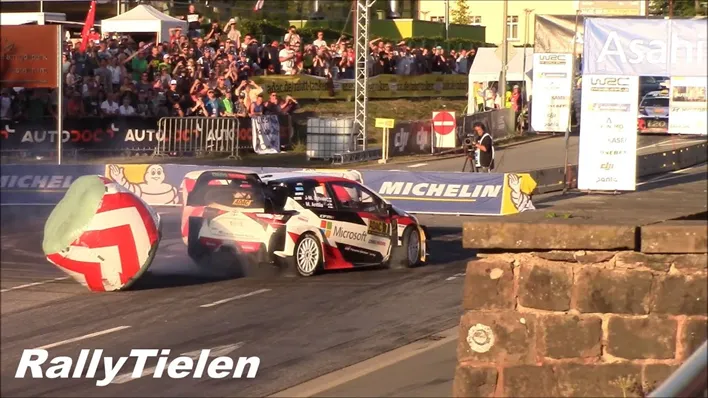
Antti: A double-header for Rally
Deutschland! It must be tricky to create super specials for rallies with tarmac
tyres and suspension, but this was a different flavor of horrible than
Saarbrucken. The cars were just understeering on the long corners and the
parking lot section was dreadful. A donut with tarmac tyres topped this
experience! Just like Saarbrucken, this stage didn’t return the next year, but
they ran the shakedown as the Thursday super special instead!
Dimitris: Is this the stage with the most haybales ever? For 2018 the
Rally Germany organizers just put a couple of dozen of haybales in a parking
lot, and had the crews drive around them. 2 laps of hairpins and 90-degree
corners and a donut to top things off! Very uninspiring.
Footage from the stage:
Wales Rally GB - Cardiff 2005-2008
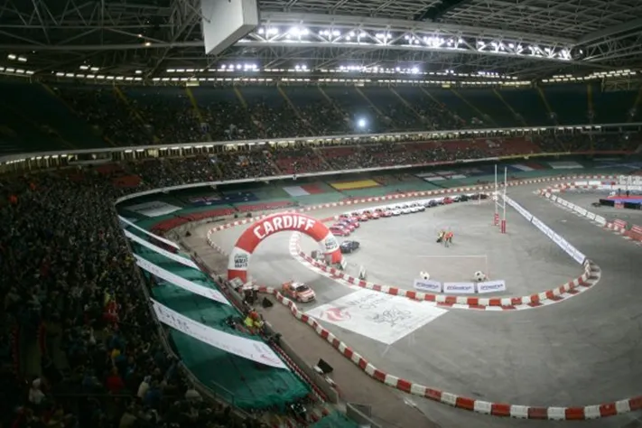
Antti: It’s as if they wanted their own
stadium stage but didn’t have a budget to create a twin-car spectacle. The
track is short and simple that it reminds me of a kid who has made a small
racing track to ride his bicycle in the yard.
Dimitris: The problem I have with this stage is not the location, but
the route. Instead of making a simple head-to-head stage, they made a very
weird stage that got torn apart very often because of its long corners.
Footage from the stage:
Rally Finland 2000 - Killeri
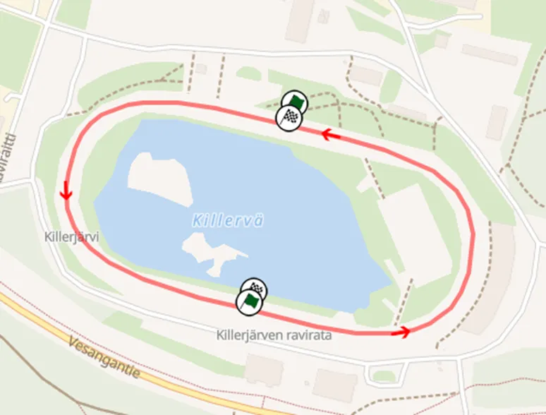
Dimitris: It was just an oval. Not
much more to add, very uninspiring and rather pointless.
Antti: This is a brutal one. Just an oval trotting track with an artificial
jump, cars starting from opposite straights. The average speed was up to 118
km/h! The next year they updated the stage to the twin-car structure with a
bridge and more corners, which was used up to 2013.
Footage from the stage:
Dimitris' Picks
Rally Turkey 2010 – Istanbul
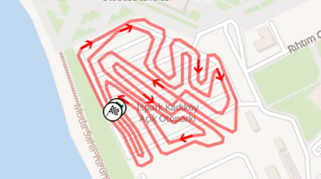
Dimitris: Rally Turkey in 2010 is easily forgettable, and so was the SSS. It looked like a very hastily put together karting track with a very weird angled jump that could smash someone's radiator. Did I mention that this stage was in a parking lot? Because it was.
Antti: I hadn’t even seen this stage
before writing this article, but it sure looks terrible. It’s situated on a
parking lot? And that jump, oh my god…
Footage from the stage:
Rally Mexico 2023 - Distrito Leon Mx
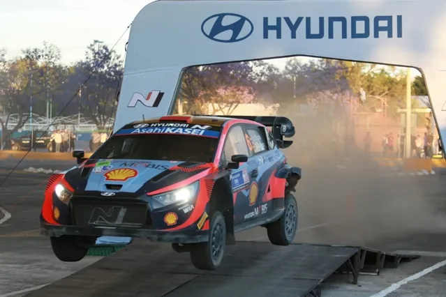
Dimitris: In a rally filled with 8 (!) runs of SSS, this was the worst one. The stage was behind the service park, and its layout was defined by chalk and sand bags. It started in a “tent” section with pointless hairpins and 90 degree corners. After a rather useless man made jump, the stage goes into another mickey mouse section the stage ends. Why was this a thing? I don't know either.
Antti: This stage was originally more interesting with a park section in the end, but for a reason or another that got scrapped and we were left with just horrible artificial sections which have partly featured before on Street Stage Leon.
Rally Acropolis 2023 - Plateia Nerou
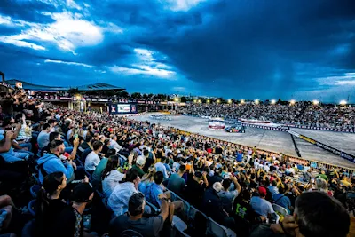
Dimitris: I was actually there for this one, it wasn't great. The stage was at a place where concerts are held, so it was very empty, and the whole area looked abandoned. The mickey mouse section had the worst chicane and donut sequence I have ever seen and it was in the fan zone, so funnily enough the people who paid 70 euros got to see the worst part of the stage.
Antti: This is very Mickey Mouse for sure,
all artificial barriers and donuts. But there are many examples of similar
stages, especially in Portugal.
Footage from the stage:
Antti's picks
Wales Rally GB - Colwyn Bay 2019
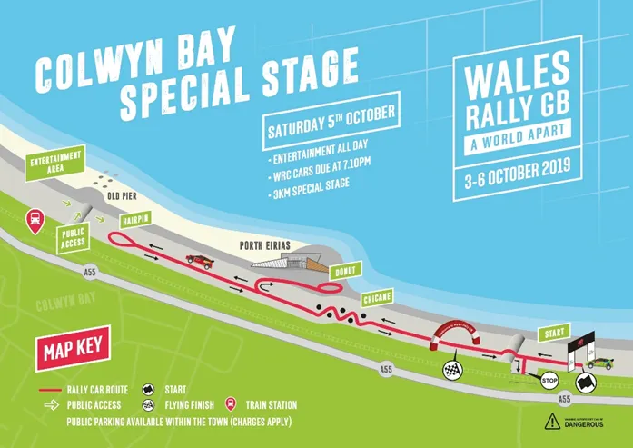
Antti: This is just straights and very tight
chicanes, taking a detour onto a parking lane, and coming back the same route
back. There is basically nothing natural or flowing in here, although no ramp
jumps or donuts! Actually a funny discovery was that in 1972 they also ran a
super special in Colwyn Bay with almost exactly the same length, but with a
more natural route, of course.
Dimitris: Another SSS that just feels like a filler in all honesty. It
has nothing special going on for it, and if I was a driver I would be wondering
why am I not heading to service instead.
Footage from the stage:
Rally Mexico 2017 - Mexico City
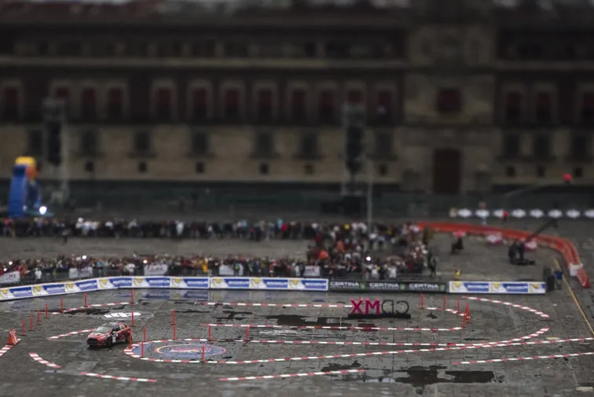
Antti: Another stage made up of merely
artificial elements like donuts, ramp jumps and chicanes as well as a section
marked by plastic poles on a market square. Also when we combine the fact that
they transported the rally cars on a truck which got delayed and two actual
stages were canceled, it makes this stage even less valuable (although
financially it was crucial). Also gives us a nice pub quiz stat: Why did the
driver who won SS1 not led the rally? Because at the last minute they doubled
the stage and first run of the stage was SS0!
Dimitris: What would happen if you took everything annoying about super
special stages, and added it in one place. You would get this stage. 5 (!!!)
donuts, pointless jumps and the stage looks like a maze to drive. And I still
don’t understand the “SS0” thing.
Rally Acropolis 2021 – Syntagma Square
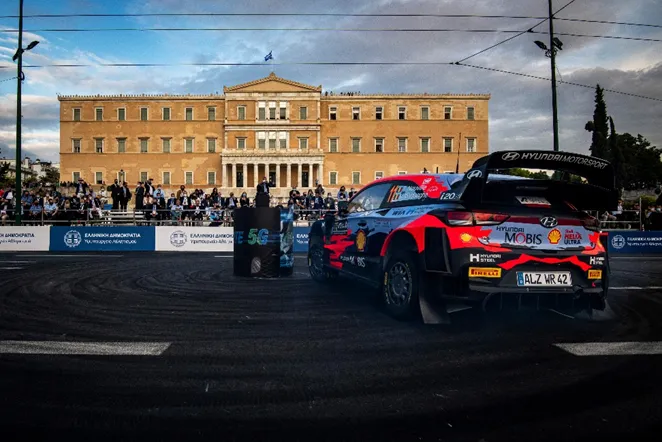
Antti: In addition to Killeri 2000, one of
the few WRC stages that only turn in one direction. I admit it was exceptional
to get the rally in the middle of such a big city, but things like that
shouldn’t be done at the cost of the stage itself (same applies to Mexico
City). This, like all three of my picks, were one-offs, luckily!
Dimitris: A for effort, D- for execution. The atmosphere was great, but
the stage itself was awful. It was just a square with donuts.
Footage
from the stage:
You can also check out our list with the 10 best Super Specials on Antti's blog here:
https://itgetsfasternow.com/2023/10/06/collaboration-the-best-wrc-super-specials/
All pics are from the Red Bull Content Pool


Comments